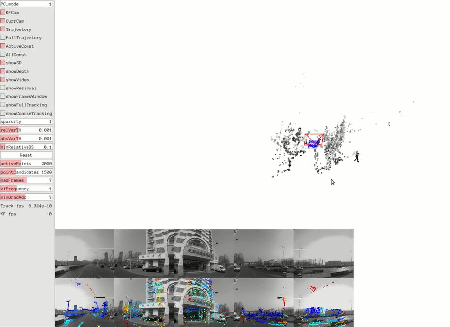
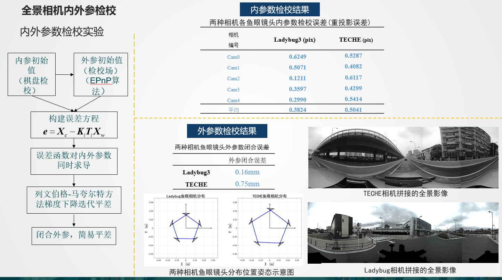
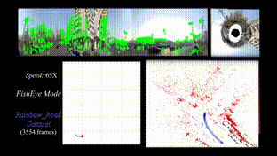
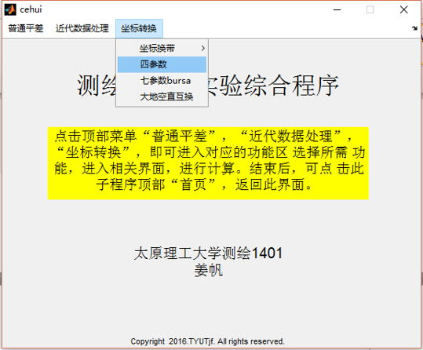
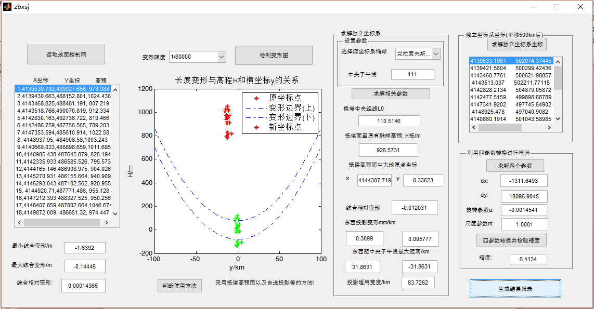
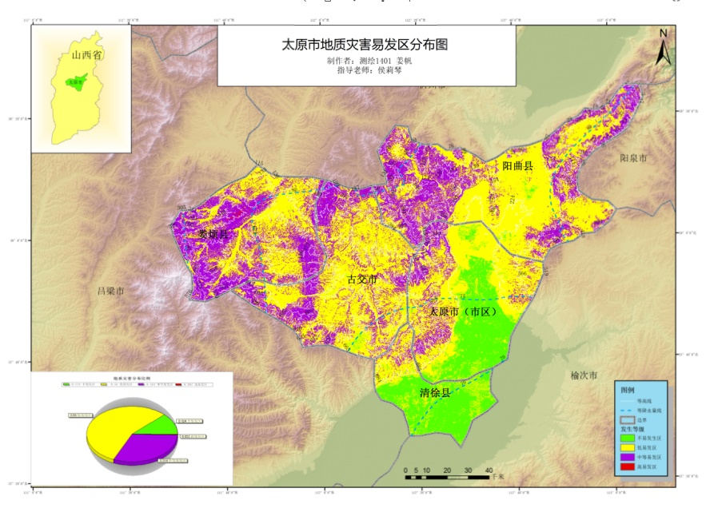

姜帆武汉大学遥感信息工程学院 摄影测量与遥感硕士 邮箱：jiang_fan@whu.edu.cn 联系方式：15735182535 |
我目前就读于武汉大学遥感信息工程学院摄影测量与计算机视觉课题组， 导师为季顺平教授。我的研究方向为视觉SLAM/组合式全景相机成像原理/地面移动测量。
| 2018.09-2021.06 | 武汉大学 | 摄影测量与遥感 硕士 |
| 2014.09-2018.06 | 太原理工大学 | 测绘工程 学士 |
|
1.基于直接法的多相机组合式全景相机SLAM算法(负责/在研) • 基于多镜头组合式全景相机成像模型，对DSO相机模型进行修改， 对光度仿射变换参数设置做出调整 • 推导全景成像的光度误差函数以及Jacobian矩阵，修改tracking中 位姿优化优化模块，以及滑动窗口优化模块 • 球面极线搜索，球面坐标逆深度更新等公式推导 |
 |
|
2.多相机组合式全景相机内外参标定(负责) • 使用通用相机模型，等距投影模型对单鱼眼相机进行内参标定 • 三维标定场进行多相机外参标定，并使用ceres进行内外参整体优化 • 扩展Pano-SLAM部分鱼眼相机模型(增加通用相机投影模型) |
 |
|
3.基于ORB-SLAM的多相机组合式全景相机SLAM算法(参与) • 与师兄一起明确ORB-SLAM修改模块进行分工 • 理论部分负责球面EPnP公式的推导，球面Jacobian矩阵的推导 • 代码上负责g2o部分自定义节点与边，后端优化部分 |
 |
|
4.大地测量相关坐标系坐标转换matlab工具包(负责) • 完成包括大地测量坐标系，地理坐标系，投影坐标系的转换工具 • 完成简易导线平差与水准网平差程序 • 完成沉降秩亏自由网平差，粗差探测 |
 |
|
4.大地测量城市/矿区独立坐标系设计 • 精确设定设计坐标系的作用区域 • 设计满足**煤矿井下测量综合变形要求优于1/80000的独立坐标系统 • 设计坐标系统采用等角投影 |
 |
|
5.太原市地质灾害分析 • 坡度，坡向，相对高差，断层距离，植被覆盖度，区域河网密度，降雨分布， 人类工程（选择公路铁路）等影响因子栅格化，并对其进行重分类， 最后进行加权叠加 • 使用地理信息系统软件arcgis进行模型构建，生成分析结果图，并进行定量统计 |
 |
| 2018 | 武汉大学研究生新生二等奖学金 |
| 2016 | 国家励志奖学金 |
| 2016/2017 | 太原理工大学学业奖学金 |